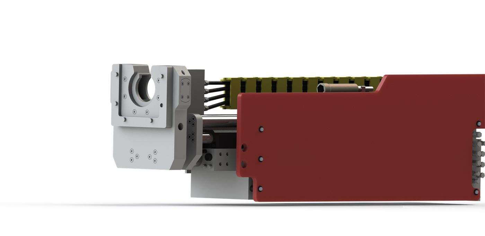
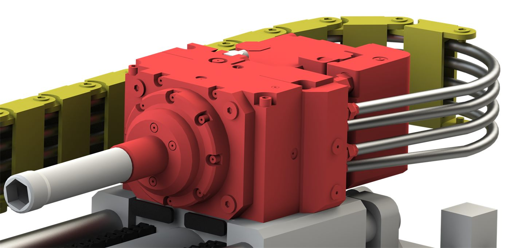
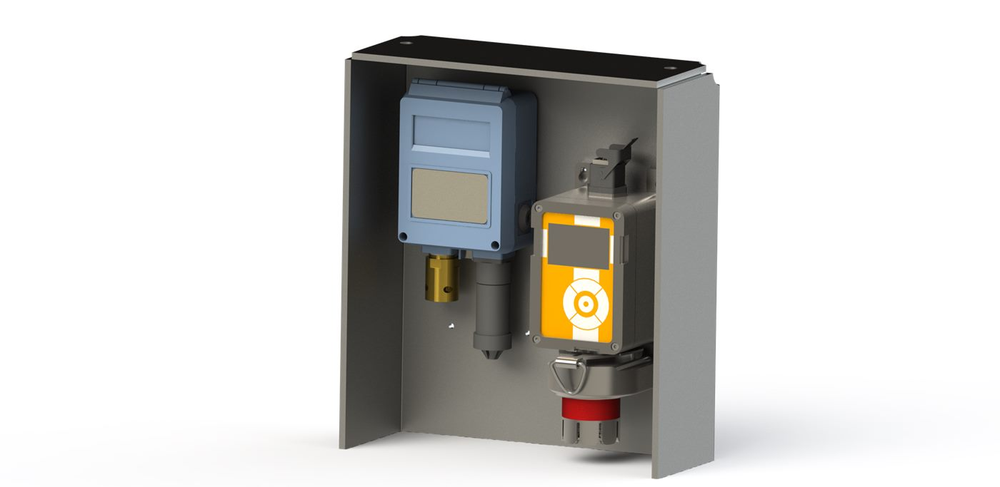
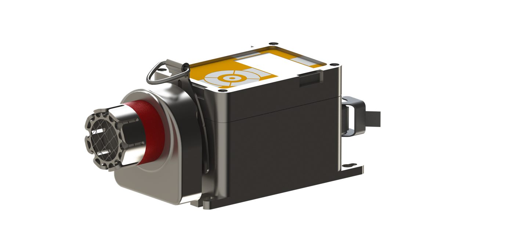

Cut Coal
Technology
CAD modelling and visualisation of underground mining equipment, produced during a work placement with Cut Coal Technology — covering a drill rig assembly and a mounted gas-sensor enclosure. Real hardware, real constraints, and drawings that had to be read by people who build things.

Overview
Cut Coal Technology works in underground coal — an environment where equipment has to survive dust, water and impact, and where anything mounted in the roadway has to be serviceable by someone in a confined space wearing gloves.
My work across the placement fell into two areas: modelling and visualising a drill rig assembly, and developing a protective mounting enclosure for gas-detection sensors. Both needed CAD that was accurate enough to hand to a fabricator and renders clear enough to explain the hardware to people who weren't going to open a CAD file.
Drill Rig Assembly
A multi-part machine assembly: feed frame, sliding carriage, drive housings, hose management and bolt-on guarding. Working at assembly level meant keeping mates and clearances honest as components moved through their travel, so the model stayed useful for checking fit rather than just looking correct in one pose.
{kind=link}

Carriage & drive housing
{kind=link}

Assembly view
{kind=link}
{kind=link}
{kind=link}
{kind=link}
Gas Sensor Enclosure
Gas-detection sensors underground are exposed to knocks and washdown but still need airflow across the sensing head and clear sight of the display. The enclosure is a folded sheet-metal shroud that shields the instruments from impact and direct spray on three sides while leaving the front open — so the sensor still reads the atmosphere it's meant to be reading, and a person can check it at a glance.
Both the Trolex gas head and the paired pressure switch were modelled so the bracket could be developed around real hardware rather than assumed envelopes, with the flat pattern worked out for folding.
{kind=link}

Assembled enclosure
{kind=link}

Mounting detail
{kind=link}
{kind=link}
{kind=link}